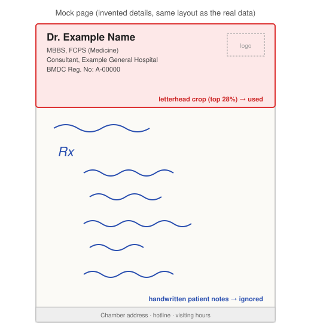
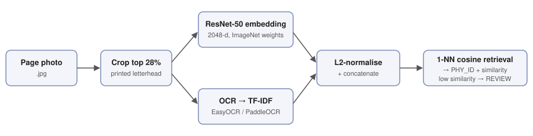
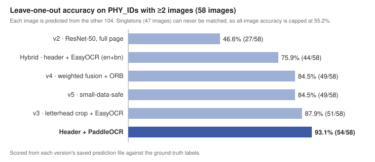

The problem
Given phone photos of handwritten prescription pages, predict which physician (PHY_ID) issued each page, from the image content alone. The dataset had 105 photos and 67 physicians, and 47 of those physicians appear only once.
The key insight
It first looked like a patient-matching problem, but the labels showed every physical book contained pages from several different physicians. The identity follows the doctor, so the signal is the printed letterhead, not the handwriting. Measured on the data, letterhead crops from the same physician were about twice as similar (SSIM ~0.51) as crops from different physicians (~0.27).

Method

Retrieval instead of classification, because most physicians have one or two examples. The similarity score doubles as a confidence value, so uncertain predictions go to a person instead of being acted on.
Results and what I learned

- Honest evaluation. The first version reported about 100% because it tested on its training images. Every number here is leave-one-out.
- More knobs made it worse. A version with four signals and tuned fusion weights scored 91.4% in cross-validation but only 84.5% under leave-one-out: with 58 evaluable images, tuning overfits.
- One variable at a time. Swapping only the OCR engine gave the best result, 93.1%.
- The data sets the ceiling. Physicians seen only once can never be matched, which caps all-image accuracy at 55.2%. More examples per physician would help more than a bigger model.
The real images are patient medical records, so they are not published.